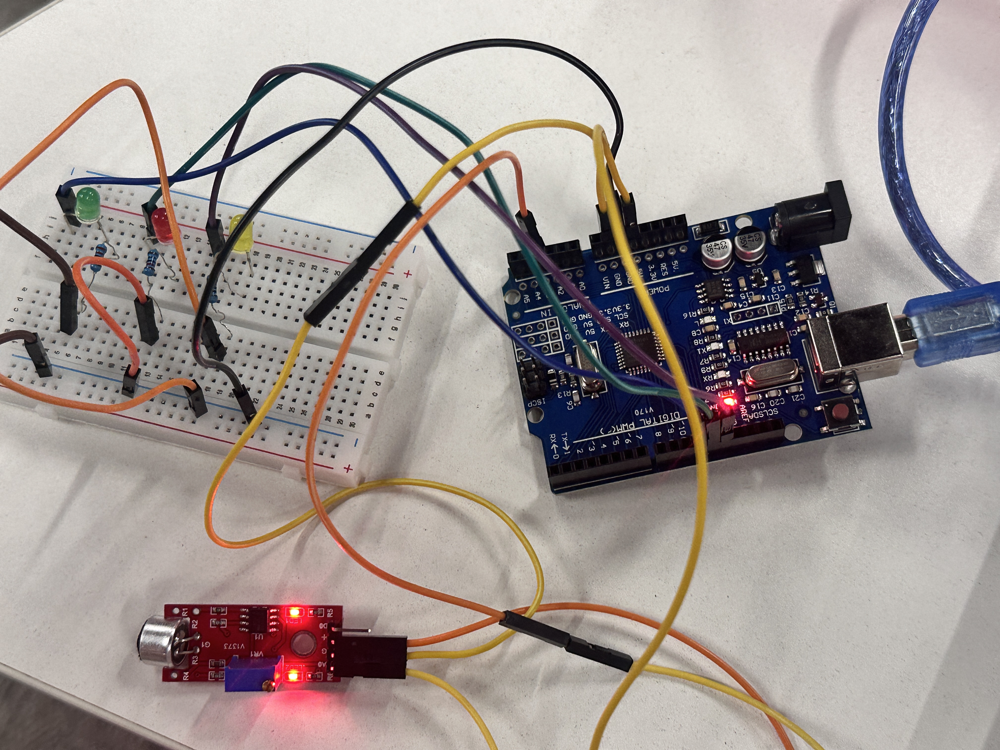

HOMEWORK 2
Arduino Output - Flow Lamp Program
1. Learn Open Source Hardware
Arduino是一款开源电子原型平台,由硬件(开发板)、软件(IDE)和社区组成,使绝对初学者能够快速构建交互式电子设备、机器人和物联网项目。

Arduino 核心组件概览
核心组件
硬件(开发板)
- 主流型号: Arduino Uno(最常用)、Nano、Mega、ESP32(带WiFi)。
- 板载功能: USB端口、电源、微控制器、数字/模拟I/O引脚;支持连接传感器、电机和LED。
开源
什么是开源?
开源意味着软件/硬件的源代码公开可用。它代表了一种哲学和方法论,资源开放共享,任何人都可以访问、学习、修改和分发。
开源的关键原则:
- 使用自由: 任何人都可以将软件/硬件用于任何目的,不受限制。
- 学习自由: 源代码/原理图可供学习和理解其工作原理。
- 修改自由: 用户可以调整和定制设计以满足特定需求。
- 分享自由: 修改后的版本可以重新分发,造福整个社区。
Arduino的开源生态系统:
- 硬件原理图: 所有Arduino开发板设计都在Creative Commons许可下发布,允许任何人制造兼容的开发板。
- 软件和库: Arduino IDE和核心库是开源的(LGPL/GPL许可),使开发人员能够扩展功能。
- 社区贡献: 代码、项目和教程通过GitHub、Arduino Project Hub和论坛等平台由全球数百万用户共享。
- 协作开发: Bug修复更快,功能持续添加,创新来自社区协作。
开源的好处:
- 透明度: 完全了解工作原理,建立信任并促进学习。
- 成本效益: 无许可费用;显著降低开发成本。
- 快速创新: 社区驱动的改进加速技术进步。
- 教育价值: 非常适合教授电子、编程和工程概念。
- 可持续性: 即使原始制造商停产产品,设计仍然可访问。
主要特点
- 易于学习: 无需复杂的寄存器知识;只需几行代码即可点亮LED。
- 低成本: 兼容开发板只需几十元,模块价格低廉。
- 高度可扩展: 支持各种传感器、电机和扩展板。
- 跨平台: IDE可在三大操作系统上运行。
- 强大的社区: 几乎任何问题都能找到解决方案。
典型应用
- 基础: LED闪烁、按钮、光传感器控制、蜂鸣器
- 中级: 蓝牙/WiFi遥控车、环境监测(温度/湿度/PM2.5)、智能家居设备
- 物联网(IoT): ESP32连接云平台,通过手机应用控制
Arduino UNO Q介绍
Arduino UNO Q是一款下一代开发板,将传统Arduino的简单性与强大的计算能力相结合。

图1：Arduino UNO Q开发板 (查看官方文档)

图2：Arduino UNO Q原理图
1. 核心结构
双芯片设计,既可作为微控制器,也可作为迷你计算机工作。
2. 两个芯片的职责
- 四核高通芯片: 运行Linux,处理AI、视觉和网络任务
- STM32芯片: 实时控制传感器和电机
3. 硬件兼容性
与标准UNO具有相同的引脚布局,兼容旧版扩展板和传感器。
4. 内置规格
- 配备2/4GB RAM
- 16/32GB存储
- 板载Wi-Fi 5和蓝牙5.1
5. 独特硬件
- 配备8×13灰度LED矩阵
- USB-C支持供电、数据传输和视频输出
6. 开发支持
一个统一的工具,用于Arduino草图、Python脚本和AI模型编程。
7. 适用项目
- 非常适合AI视觉机器人
- 语音设备
- 智能物联网终端
输入与输出 - 流水灯操作流程
在 wokwi.com 上模拟接线
步骤1:选择Arduino开发板
选择Arduino开发板。

在Wokwi上选择Arduino板 - 步骤1
步骤2:点击加号图标添加组件
点击加号图标添加组件。

点击加号图标添加组件
步骤3:添加组件

添加LED、电阻等组件 - 步骤1

添加LED、电阻等组件 - 步骤2
添加LED、电阻等组件 - 步骤3
电路图
完整的电路图,显示Arduino、LED、电阻和声音传感器之间的连接。

完整电路图：Arduino、LED、电阻和声音传感器的连接
模拟结果
完成接线后,您可以运行模拟以查看实际效果。
模拟运行效果：电路搭建完成后的实际效果展示
工作原理
- 正常音量下绿灯常亮。
- 大声说话时黄灯以呼吸模式闪烁。
- 未检测到声音时,LED以流水灯模式运行。

实际电路连接图：Arduino、LED和声音传感器的物理接线
操作代码
/* 声音控制三色灯 - 修复无明暗变化、中途黑屏、闪烁断点
* 安静 (<60) : 流水灯 (绿->红->黄)
* 正常 (60~350) : 绿灯常亮
* 大声 (>350) : 黄灯平滑呼吸，无黑屏、明暗变化清晰
*/
const int PIN_LED_GREEN = 11;
const int PIN_LED_RED = 12;
const int PIN_LED_YELLOW = 9; // 黄灯改为D9引脚
const int SOUND_SENSOR = A3;
// 可调阈值
const int SILENT_THRESHOLD = 60;
const int LOUD_THRESHOLD = 350;
const unsigned long INTERVAL = 300;
const unsigned long BREATHE_CYCLE = 1000; // 1秒一轮呼吸，变化更快
const int NUM_SAMPLES = 10;
const int REQUIRED_STABLE = 3;
const int MIN_YELLOW_BRIGHT = 30; // 最低微光，不会完全熄灭
unsigned long lastChange = 0;
int step = 0;
unsigned long breatheStart = 0;
int lastMode = -1;
int stableCount = 0;
// 读取音量峰值
int readMaxVolume() {
int maxVal = 0;
for (int i = 0; i < NUM_SAMPLES; i++) {
int v = analogRead(SOUND_SENSOR);
if (v > maxVal) maxVal = v;
delay(3);
}
return maxVal;
}
void setup() {
pinMode(PIN_LED_GREEN, OUTPUT);
pinMode(PIN_LED_RED, OUTPUT);
pinMode(PIN_LED_YELLOW, OUTPUT);
Serial.begin(9600);
digitalWrite(PIN_LED_GREEN, LOW);
digitalWrite(PIN_LED_RED, LOW);
analogWrite(PIN_LED_YELLOW, 0);
}
void loop() {
int volume = readMaxVolume();
Serial.println(volume);
int mode;
if (volume < SILENT_THRESHOLD)
mode = 0;
else if (volume < LOUD_THRESHOLD)
mode = 1;
else
mode = 2;
// 模式防抖
if (mode == lastMode) {
stableCount++;
} else {
stableCount = 0;
lastMode = mode;
}
if (stableCount >= REQUIRED_STABLE) {
// 只关闭红绿，删除全局黄灯清零，杜绝瞬间黑屏
digitalWrite(PIN_LED_GREEN, LOW);
digitalWrite(PIN_LED_RED, LOW);
if (mode == 0) {
// 安静流水模式，仅此处关闭黄灯
analogWrite(PIN_LED_YELLOW, 0);
breatheStart = 0;
unsigned long now = millis();
if (now - lastChange >= INTERVAL) {
lastChange = now;
step = (step + 1) % 3;
if (step == 0) digitalWrite(PIN_LED_GREEN, HIGH);
else if (step == 1) digitalWrite(PIN_LED_RED, HIGH);
else analogWrite(PIN_LED_YELLOW, 255);
}
}
else if (mode == 1) {
// 正常音量：绿灯常亮，黄灯关闭
digitalWrite(PIN_LED_GREEN, HIGH);
analogWrite(PIN_LED_YELLOW, 0);
breatheStart = 0;
}
else {
// 大声模式：平滑呼吸渐变
if (breatheStart == 0) {
breatheStart = millis();
}
unsigned long elapsed = millis() - breatheStart;
float t = (float)(elapsed % BREATHE_CYCLE) / BREATHE_CYCLE;
float scale = (t < 0.5) ? t * 2 : (1 - t) * 2;
int brightness = MIN_YELLOW_BRIGHT + scale * (255 - MIN_YELLOW_BRIGHT);
analogWrite(PIN_LED_YELLOW, brightness);
}
}
delay(30);
}演示视频
点击任意视频全屏查看。双击放大。
安静模式 - 流水灯效果
正常音量 - 绿灯常亮
大声 - 黄灯呼吸模式